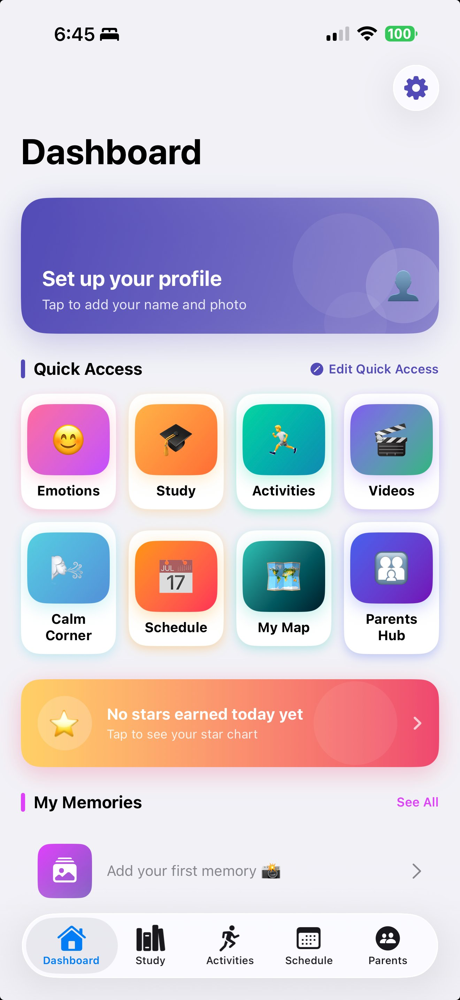
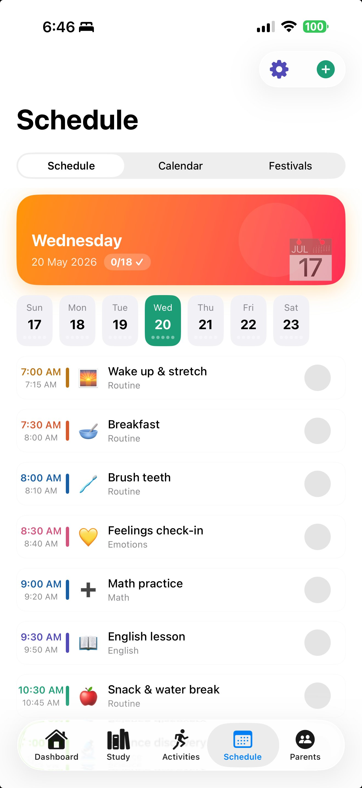
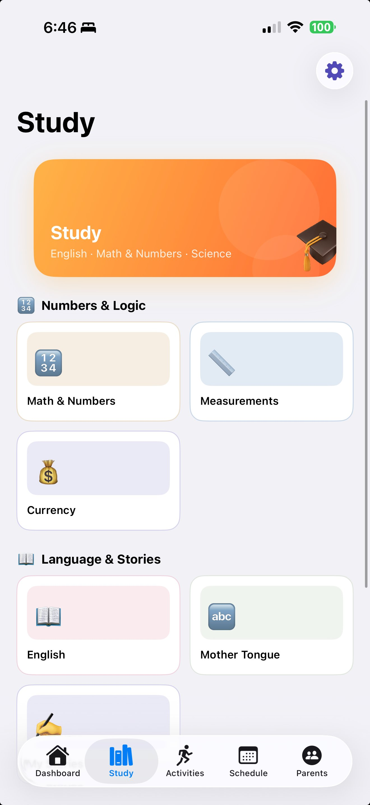
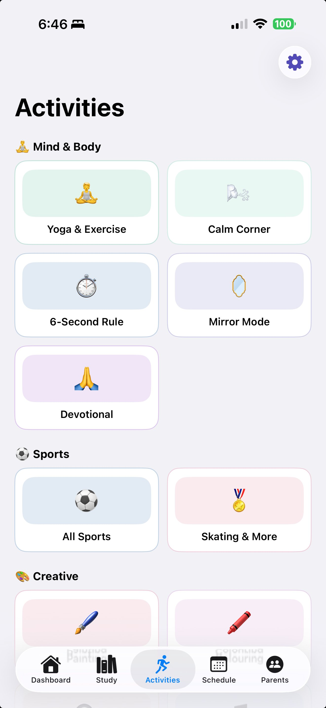
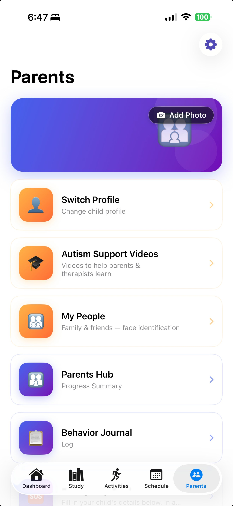
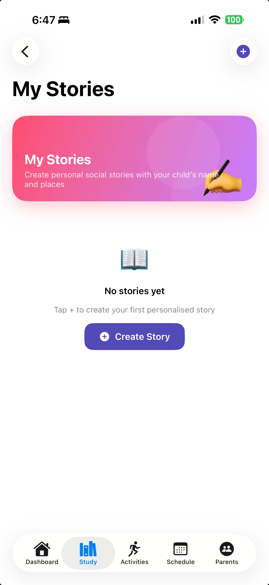
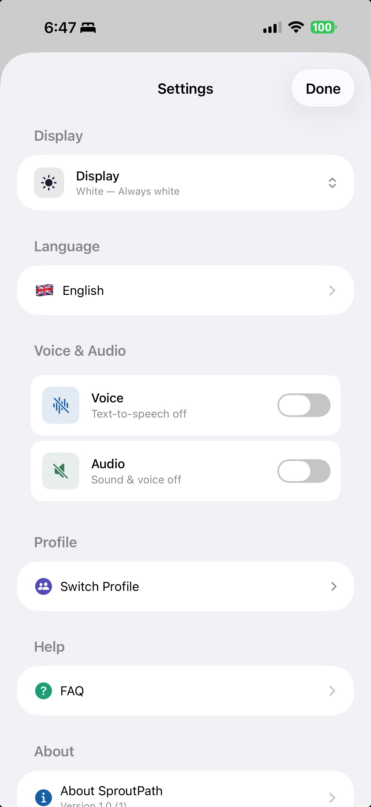

SproutPath gives children the structure, tools, and joy they need to thrive — at home, at school, and everywhere in between.





Covering daily life, learning & calm
Visual, accessible, sensory-aware design
Full interface & content localisation
Every screen is thoughtfully designed to support daily life, build real skills, and nurture wellbeing — for children and the adults who care for them.
The Dashboard is your child's home base — a calm, colourful hub with quick access to Emotions, Study, Activities, Schedule, Calm Corner, My Map, and Parents Hub. The star chart banner celebrates each day's wins, and My Memories sits ready to capture special moments. Everything your child needs is one tap away, with no clutter and no confusion.
The Study screen organises subjects into two clear groups: Numbers & Logic — covering Math, Measurements, and Currency — and Language & Stories, with English and Mother Tongue modules. Each topic is broken into short, accessible steps designed for children who learn differently. Content is available in all 12 supported languages so every lesson feels familiar and achievable.
Activities is organised into three categories so finding the right outlet is always easy. Mind & Body includes Yoga & Exercise, the Calm Corner, the 6-Second Rule emotional regulation tool, Mirror Mode for self-awareness, and Devotional practices. Sports covers All Sports and Skating & More. Creative activities bring painting, colouring, and craft to life — giving every child a way to express, move, and recharge.
The Schedule shows every task in time-blocked order — Wake up & stretch, Breakfast, Brush teeth, Feelings check-in, Math practice, English lesson, Snack break — each with its own icon and a checkbox to tap when done. A weekly strip lets children see what's coming, and a Festivals tab marks cultural occasions. Consistent, visual routines build confidence and help children feel safe knowing exactly what happens next.
The Parents section gives caregivers everything they need in one protected space. Switch between child profiles instantly, access Autism Support Videos curated for parents and therapists, build a My People gallery of family and friends with face identification, review Progress Summaries from the Parents Hub, and log observations in the Behaviour Journal. An SOS quick-action sits at the bottom for urgent moments. All of it is locked behind a parent passcode.

Social stories are one of the most effective tools for helping children with autism understand new or challenging situations — and My Stories puts the power to create them directly in parents' hands. Tap the + button to build a personalised story using your child's own name, familiar places, and real-life scenarios. Abstract situations become safe, knowable, and less frightening when the main character is someone your child recognises: themselves.

Settings keeps customisation clean and parent-controlled. Choose the display theme, select any of the 12 supported languages, and toggle Voice (text-to-speech) and Audio on or off to match your child's sensory preferences. Switch between child profiles with a tap. The Help section surfaces the FAQ instantly, and About SproutPath shows version info. Every preference is saved locally on your device — no account syncing, no cloud uploads.
SproutPath is fully localised — every screen, prompt, and piece of learning content is available in your family's language.
We built SproutPath around one principle: parents should never have to wonder where their child's information goes.
All profiles, progress, memories, and schedules are stored locally on your device. Nothing is uploaded to external servers or shared with any third party — not even us.
SproutPath contains no advertisements, no banners, no sponsored content, and no ad trackers. Your child will never see a single ad. We are funded entirely by subscriptions.
We do not share, sell, or license your child's data to anyone — no analytics companies, no data brokers, no partners. What happens in SproutPath stays in SproutPath.
Parent guarantee: If we ever change these commitments, you will be notified first and given the option to delete all data before any change takes effect.
Download SproutPath for free and start your child's journey today. Available on all major devices.
Get started with a free account. Access core features at no cost, with optional premium plans for families and therapists.
Everything parents, caregivers and therapists commonly ask about SproutPath.
SproutPath is designed for children who benefit from visual structure, routine, and accessible learning tools — including children on the autism spectrum, those with developmental differences, and any child who thrives with clear schedules and positive reinforcement.
Yes — SproutPath is free to download and includes access to core features. Optional premium plans unlock additional study content, unlimited story creation, and advanced parent hub analytics. No credit card is required to get started.
Yes. You can create and switch between multiple child profiles within the same parent account. Each profile has its own schedule, progress data, memories, and star chart — completely separate from other profiles.
Absolutely. SproutPath is built on three unbreakable commitments: your child's data never leaves their device — all profiles, progress, and memories are stored locally on-device and are never uploaded to external servers or shared with anyone. There are zero advertisements — no banners, no targeted ads, no third-party trackers, ever. And no data is ever sold — SproutPath is funded entirely by subscriptions, not by your child's information. Sensitive settings are protected by a parent PIN, and you can delete all data at any time from within the app.
Yes. The Parents Hub includes dedicated autism support videos and resources for therapists and educators. Professional plans are available for clinics and schools that need multi-child management and session tracking tools.
SproutPath supports 12 languages: English, Telugu, Hindi, Tamil, Kannada, Bengali, Marathi, Gujarati, Malayalam, Punjabi, Odia, and Assamese. The full interface — including menus, prompts, and study content — is available in each language. Switch languages anytime via Settings → Display Language.
Core features including the daily schedule, activities, study modules, and calm corner work fully offline. Data syncs automatically to the cloud when a connection is restored, so nothing is lost between sessions.
After downloading the app, tap "Set up your profile" on the Dashboard. You can add your child's name, photo, and preferred language. Schedules and quick-access shortcuts can be personalised at any time from the Dashboard or Parents section.